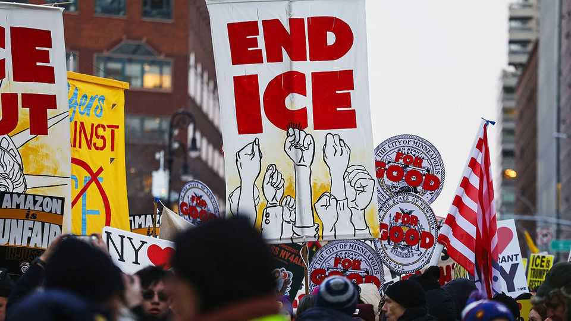
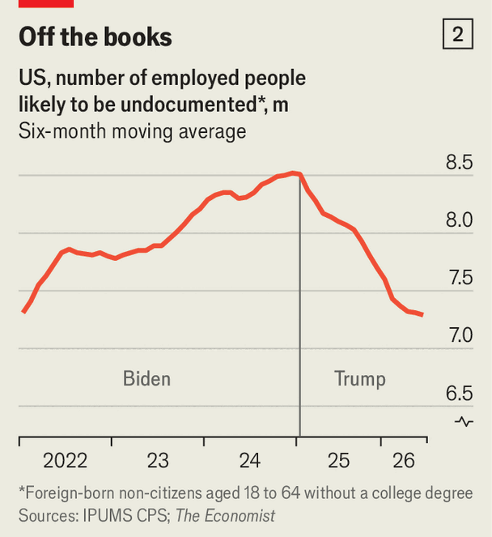

The economic costs of Donald Trump’s immigration crackdown
A smaller workforce and slower growth

Aug 27th 2026
On May 28th Art Lussi received an alarming message. His hotel, the Grandview Lake Placid, in a mountain resort in upstate New York, was halfway through a 150-room renovation ahead of the summer rush. But that morning Immigration and Customs Enforcement (ICE) agents had detained a Venezuelan maintenance worker (with legal status), plus 20 contractors. Mr Lussi estimates that the resulting delay, of nearly a month, cost half a million dollars in lost business. In a town already short of workers, finding replacements was nearly impossible. “We could still use 20 more people right now,” he says.
Donald Trump promised a draconian crackdown on immigration and has largely kept his word. Since his return to office, America’s southern border has in effect been closed to irregular migrants, access to asylum has been sharply curtailed, humanitarian-parole routes mostly shut and temporary protection largely withdrawn. High-skilled migration is under pressure from tighter rules and proposed restrictions on student visas and employment-based green cards. ICE has increased arrests on America’s streets, picking up many without criminal convictions.
All told, the administration claims to have deported 1m people and says another 2.2m have left voluntarily. These numbers may well be exaggerated. But by early 2026 deportations from within the country were running at roughly five times the rate before Mr Trump’s return, according to the Deportation Data Project at the University of California, Berkeley, and the University of California, Los Angeles.
In a nation of immigrants, this has brought about a historic reversal. In 2022-24, in a post-pandemic surge, net immigration exceeded 2m a year; in 2025 it was roughly zero, or even negative, estimates the Brookings Institution, a think-tank. The drain is probably accelerating. The consequences are already apparent, in shortages of labour at businesses like Mr Lussi’s, a shrinking workforce and slower growth. The long-term impact on America’s economic dynamism will be severe.
The demographic maths look ugly. The Congressional Budget Office, a non-partisan scorekeeper, thinks America will have 2.3m fewer 18- to 64-year-olds in 2026 than it expected at the start of 2025. Economists at the Federal Reserve reckon that the total population could grow by less than 0.2% this year—the slowest pace since 1951, when the Korean war pulled young men out of the civilian count. The hit to the workforce is larger, since immigrants are likelier to work than native-born Americans. Since January the labour force has shrunk by more than 1m.
This is putting the labour market under strain. In 2022-24 employers added more than 230,000 jobs a month on average; in the past year and a half, that has slowed to 30,000. Yet the number unemployed, just below 7m, has barely budged. With migration collapsing and the population greying, job gains are structurally limited.

Wendy Edelberg of Brookings and her co-authors estimate that the “break-even” rate of job gains needed to keep unemployment steady fell to 20,000-50,000 a month in the second half of 2025. The Dallas Fed puts it at roughly zero by the year’s end (see chart 1). Ms Edelberg expects “a break-even rate of zero for this year, too”. “I think this is our version of a healthy labour market given what is happening with population growth,” she says.
That could make life awkward for Kevin Warsh, the Fed’s chairman. Net job losses will bring pressure to cut rates, even when they are consistent with full employment. The risk also runs the other way. Even modest gains could now tighten the labour market and add to inflationary pressure.
A lack of labour will also weigh on how fast the economy grows. In the past, an expanding workforce has contributed about 1.4 percentage points a year to potential GDP growth—the economy’s sustainable speed—according to Seth Murray and Ivan Vidangos, two Fed economists. In 2026 that could fall to almost zero, requiring rising productivity to do nearly all the work.
That is a lot to ask in the near term of the artificial-intelligence boom. Earlier comparable technologies have often taken decades to have their full effect. In the first half of 2026 labour-productivity growth was a lacklustre 1.1% (at an annualised rate). Over time, labour scarcity may itself encourage firms to adopt AI more quickly. In the short run, however, the demands of the data-centre build-out could worsen shortages elsewhere and slow the AI boom.
The most visible impact of Mr Trump’s crackdown stems from his deportation campaign. Between January 2025 and June 2026, ICE made roughly 500,000 arrests in the interior that resulted in detention. This has had a chilling effect. In a survey of immigrants last year by KFF, a think-tank, and the New York Times, two in five respondents who were likely to be undocumented said they had avoided going to work. Johnny Vasquez of the Rio Grande Valley Builders Association, in Texas, recalls that after enforcement intensified in June 2025, building sites were “ghost towns”.

To quantify the effect, The Economist has used data from the Current Population Survey to build a proxy for workers likely to be undocumented: non-citizens aged 18 to 64, born abroad, with no more than a high-school education. We calculate that employment among this group has fallen by about 900,000 since Mr Trump took office again (see chart 2). Small sample sizes make the estimate volatile, but the scale of the decline is hard to miss.
Construction has been hardest hit. The industry employs about 11m people. Roughly 30% are foreign-born; in trades such as drywalling, framing and roofing, most are immigrants. “Our local workforce has been depleted in some trades by 70-75%,” says Scott Brannock, president of the Northeast Florida Builders Association. Immigrant employment is also falling sharply in restaurants and hotels, food processing, grocery stores and care services.

Some employers have responded by raising pay. Annual wage growth for non-supervisory construction workers is running at 5.2%, about 1.4 percentage points faster than in January 2025. Yet even hefty rises have failed to lure enough American-born workers into physically demanding trades. Their employment has often fallen alongside that of immigrants, rather than replacing it (see chart3). This is because the two are complementary: if a framing crew disappears, there is less work for electricians and supervisors.
Longer-lasting damage may come from a slowdown in high-skilled immigration. The administration has tightened rules on student visas—down by a third last year—H-1B visas for skilled workers and green cards. At the technological frontier, America relies heavily on foreigners: American-trained workers born abroad make up 35% of those with PhDs in science, technology, engineering and maths. Michael Clemens of the Peterson Institute for International Economics, another think-tank, and his co-authors estimate that such a sustained squeeze on student visas would shrink that top-notch workforce by 11.5% and could reduce annual real GDP by nearly $500bn (1.6% of last year’s figure) within a decade.
The squeeze is intensifying. On August 24th the administration proposed a fee of $103,265 for new H-1B visas, replacing an earlier levy struck down by a court. Meanwhile America’s rivals are moving in the opposite direction. China last year introduced its K visa to lure young scientists and technologists, while Canada and the EU have expanded routes for highly skilled workers. For decades America turned its ability to attract the best of the brightest into an extraordinary economic advantage. Mr Trump’s immigration crackdown risks leaving the country with fewer workers today and fewer innovators tomorrow. ■